ВведениеПеред прочтением теории рекомендую ознакомиться с моей статьей на хабре, где я описываю многие интересные детали, подводные камни и историю создания программы: http://habrahabr.ru/post/161301/.
А тут объясняется, как работает программа, и дается доказательство модифицированной теоремы Кемпе.
Доказательство того, что для любой косинусиодальной тригонометрической кривой существует шарнирный механизм,
который умеет ее рисовать. Оригинальная теорема Кемпе была доказана для алгебраических кривых, ее доказательство можно прочитать,
к примеру, тут.
АлгоритмИтак наша программа работает следующим образом. Пользователь рисуют любую кривую. Программа запоминает кривую в виде функций $x(t)$ и $y(t)$, $t\in [0..\pi]$. Далее, функции $x(t)$ и $y(t)$ с заданной точностью аппроксимируются конечными тригонометрическими рядами (косинусоидальными). Для точности аппроксимации $n$:$\displaystyle x(t)\approx x_{app}(t)=\frac{a_0}{2}+a_1\cos t+a_2\cos 2t+...+a_n\cos nt$ $\displaystyle y(t)\approx y_{app}(t)=\frac{b_0}{2}+b_1\cos t+b_2\cos 2t+...+b_n\cos nt$ Коэффициенты $a_k$ и $b_k$ легко находятся. Нужно просто умножить равенства слева и справа на $\cos(kt)$ и проинтегрировать от $0$ до $\pi$, тогда в правой части почти все интегралы обнулятся, кроме одного при члене $a_k$ в первом выражении и при $b_k$ во втором выражении. В итоге получится:$\displaystyle a_k=\frac{2}{\pi}\int\limits_0^\pi x(t)\cos(kt)dt,\quad b_k=\frac{2}{\pi}\int\limits_0^\pi x(t)\cos(kt)dt$ Теперь остается для тригонометрической кривой построить шарнирный механизм, который ее рисует. Предварительно мы познакомимся с основными строительными блоками нашего будущего механизма. Почти все они предложены в оригинальном доказательстве Кемпе.Механизм Липкина-Посселье
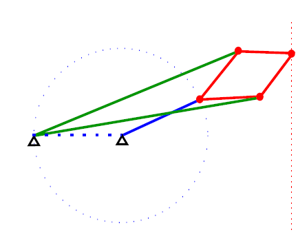
В этом механизме все палочки одинакового цвета имеют одинаковую длину. Доказать, что
механизм действительно рисует прямую можно прямыми выкладками, как говориться, в лоб.
Но люди, знакомые с
преобразованием инверсии могут увидеть довольно четкую логику в
доказательстве.
Параллелограмм и антипараллелограмм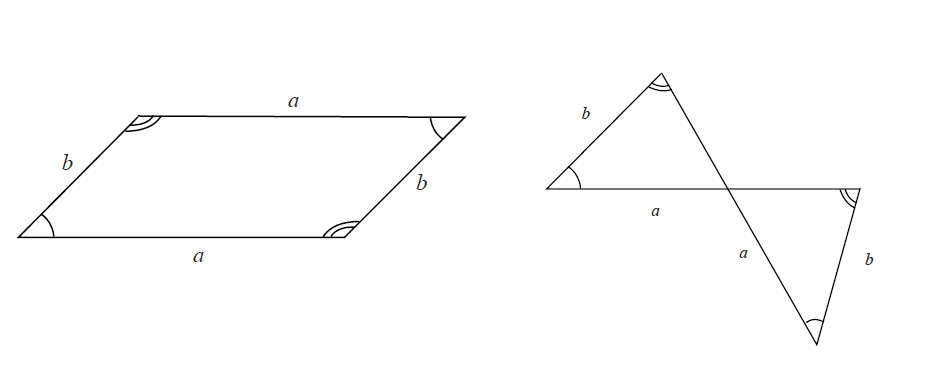
Очень важные элементы, которые будет использоваться при построении шарнира - это параллелограмм и антипараллелограмм.
Антипараллелограмм - это
вывернутый наизнанку параллелограмм.
Удвоитель угла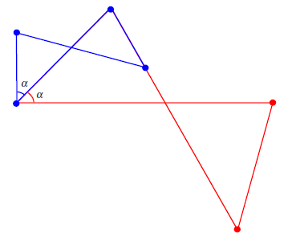
Если взять красненький антипараллелограмм, и к нему прикрепить подобный ему маленький синий антипараллелограмм,
как показано на рисунке,
то из-за того что обе фигуры подобны, соответственные углы будут, обозначенные через $\alpha$, будут всегда равны.
В получившемся шарнирном механизме можно свободно изменять как угодно угол $\alpha$ и второй угол будет всегда ему равен.
Таким образом мы построили удвоитель угла $\alpha$.
Утроитель угла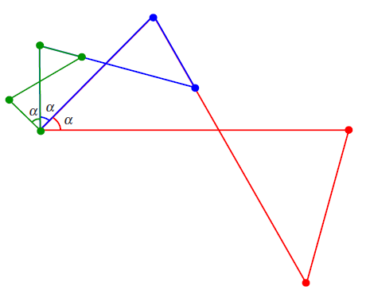
Если к предыдущему удвоителю угла прикрепить еще более маленький зеленый антипараллелограмм, подобный красненькому и синенькому,
то получится утроитель угла $\alpha$. Подобным способом можно строить шарнирные механизмы,
которые учетверяют углы, упятеряют, ушестеряют и т.д.
Транслятор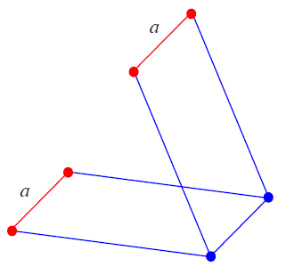
Эта конструкция из двух параллелограммов позволяет переносить отрезок $a$ параллельно самому себе.
Если вы помните, то в некоторых настольных лампах как-раз такой шарнирный механизм и
обеспечивает поступательное движение лампы (параллельно самой себе).
Транслятор вдоль определенной прямой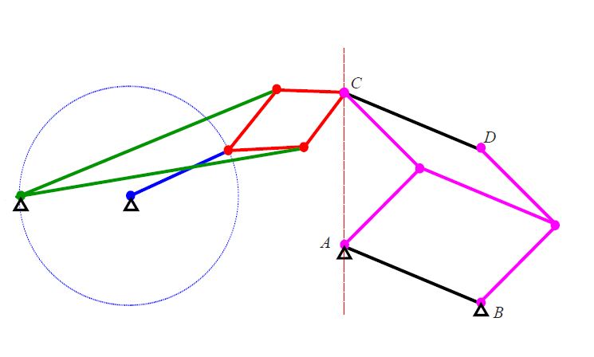
Иногда бывает нужным какой-нибудь отрезок $CD$ двигать параллельно самому себе, но так, чтобы его начальная точка
$C$ всегда лежала на определенной прямой. Для этого, как показано на рисунке, нужно
при помощи транслятора соединить отрезок $CD$,
с любым параллельным и равным ему закрепленным отрезком $AB$ (точка $A$ лежит на прямой).
Транслятор будет обеспечивать параллельное самому себе движение отрезка $CD$, но чтобы ограничить движение точки $C$
вдоль прямой, нужно соединить ее с концом шарнира Липкина-Посселье, рисующим эту прямую.
Вот мы и познакомились со всеми строительными блоками нашего будущего механизма.
Но перед тем как переходить к построению нашего шарнира, следует остановиться на очень важном и интересном
исторически важном моменте, связанным с параллелограммным и антиапараллелограммным шарнирами.
Дело в том, что Кемпе в своем доказательстве не учел, что при движении они могут переходить друг в друга,
проходя критический момент (когда все палочки лежат на одной прямой).
Параллелограмм может вывернуться наизнанку в антипараллелограмм.
Эта маленькая дыра в доказательстве Кемпе делала его доказательство, строго говоря,
неверным и была залатана совершенно недавно в 2008 году в
дипломной работе
студента MIT Тимоти Абботта.
Чтобы параллелограмм не выворачивался бы в антипараллелограмм, а антипараллелограмм - в параллелограмм,
Абботт предложил специальную надстройку над ними, такую, что она не
мешает движению, но и не дает шарниру вывернуться наизнанку:
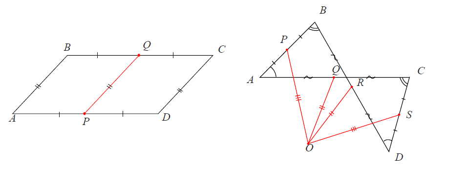
Для параллелограмма эта надстройка довольно очевидна: нужно прикрепить параллельную боковой стороне палочку.
А для антипараллелограмма надстройка не такая очевидная.
На правой картинке точки $P,Q,R$ и $S$ - середины соответствующих сторон, а точка $O$ выбрана таким образом, чтобы
показанные на рисунке красные отрезки были бы соответственно равны: $OP=OS$ и $OQ=OR$.
В моей программе я использую именно эти шарниры с надстройками, но в изложении
доказательства я не буду рисовать эти красные надстройки, чтобы не загромождать рисунки.
Построение шарнираИтак мы наконец переходим к заключительной части нашего построения. Все предварительные заготовки уже изучены, и теперь мы готовы для любой тригонометрической кривой вида$x(t)=a_0+a_1\cos t+a_2\cos 2t+...+a_n\cos nt$ $y(t)=b_0+b_1\cos t+b_2\cos 2t+...+b_n\cos nt$ строить шарнирный механизм, рисующий ее. Мы построим такой механизм для конкретного примера (купол): 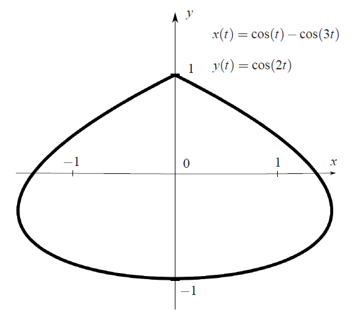
Идея построения довольно простая. Сначала мы без труда построим механизм, который рисует кривую так, что проекция
рисующей точки на ось $x$ равна
$x(t)=\cos t-\cos(3t)$. Потом мы аналогично построим такой же механизм, у которой проекция рисующей точки на ось $y$ равна
$y(t)=\cos 2t$. Потом мы эти механизмы соединим друг с другом таким образом, что они вместе будут рисовать нашу искомую кривую.
Начнем с первой функции $x(t)=\cos(t)-\cos(3t)$.
Построим для произвольного угла $t$ уже нам хорошо известный утроитель угла. Как мы уже знаем, он состоит из трех скрепленных между собой
подобных антипараллелограммов. Не забываем закрепить наш шарнир в точках $0$ и $1$:
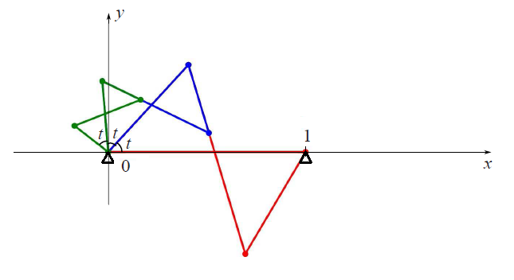
Теперь на этом утроителе угла построим два серых отрезка $0A$ и $0B$, так чтобы их длина равнялась бы $1$.
Отрезок $0A$ образует угол $t$ c осью $x$, а отрезок $0B$ - угол $-3t+\pi$, поэтому проекция точки $A$ на ось $x$ имеет
длину $\cos(t)$, а проекция точки $B$ - длину $-\cos(3t)$.
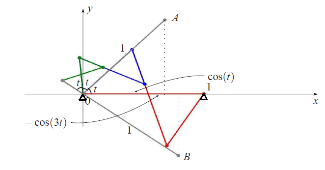
При помощи сиреневого транслятора перенесем отрезок $0B$ параллельно самому себе
так, чтобы его начало совпадало с точкой $A$. Получится отрезок $AC$,
параллельный и равный по длине отрезку $0B$. Проекция точки $C$ на ось $x$
будет равна нашей функции $x(t)=\cos(t)-\cos(3t)$
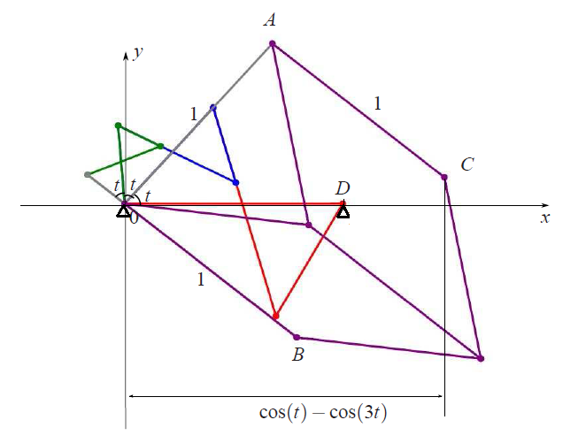
Теперь совершенно аналогично для функции $y(t)=\cos(2t)$ мы строим шарнирный механизм такой, что проекция
точки $E$ на ось $y$ равна $y(t)=\cos(2t)$
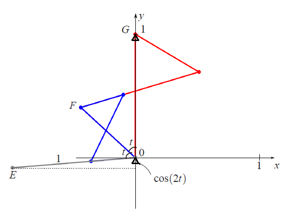
Итак, у нас есть два шарнирных механизма. У первого при изменении угла $t$ проекция точки $C$
на горизонтальную ось $x$ равна $x(t)=\cos(t)-\cos(3t)$, а у второго - проекция точки $E$ на вертикальную ось $y$
равна $y(t)=\cos(2t)$. Проблема в том, что пока эти два шарнира совершенно независимы, поэтому где-то в отдельном
месте нужно построить соединяющий их "двигатель" - прямоугольный синенький треугольник, который будет крутиться:
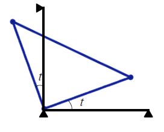
Первый (горизонтальный) угол $t$ "двигателя" при помощи транслятора вдоль вертикально прямой $0y$
соединим с углом $\angle A0D=t$ первого шарнира, а второй (вертикальный) угол $t$ "двигателя" при помощи транслятора вдоль горизонтальной прямой $0x$
соединим с углом $\angle G0F=t$. Получится, что первый шарнир как одно целое можно сдвигать вдоль вертикально оси $0y$
(при этом проекция точки $C$ горизонтальную ось $0x$ всегда будет $x(t)=\cos(t)-\cos(3t)$),
а второй шарнир к одно целое можно сдвигать вдоль горизонтальной оси $0x$
(при этом проекция точки $E$ на вертикальную ось $0y$ всегда будет $y(t)=\cos(2t)$). Нам остается просто свести
и соединить точки $C$ и $E$. У склеенной точки будет координата $x(t)=\cos(t)-\cos(3t),\quad y(t)=\cos(2t)$, то есть она
и будет рисовать нашу искомую кривую (купол). В итоге вот какой шарнирный механизм получится:
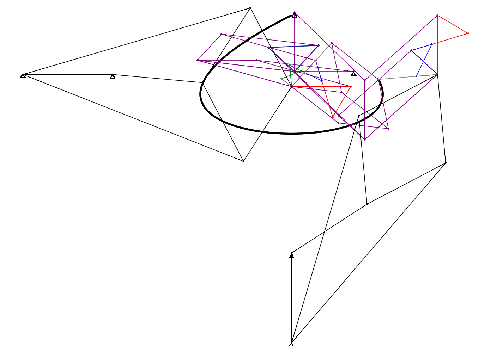
Картинка очень запутанная, но, как говорится, какой шарнир, такой и рисунок.
|